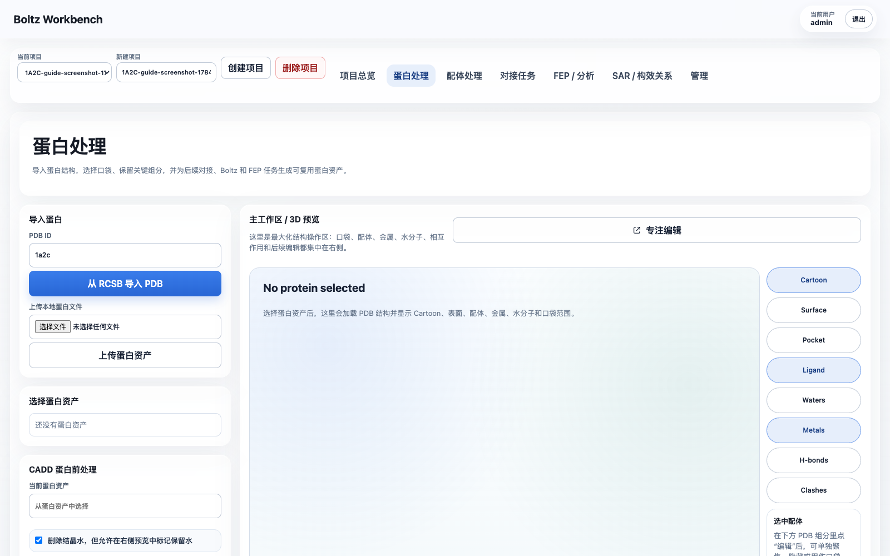
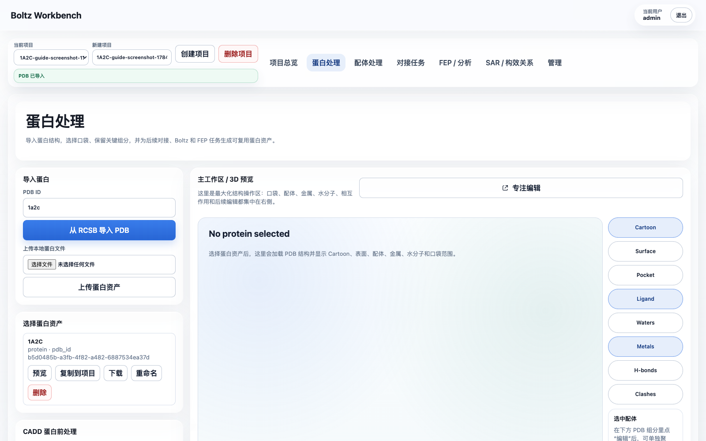
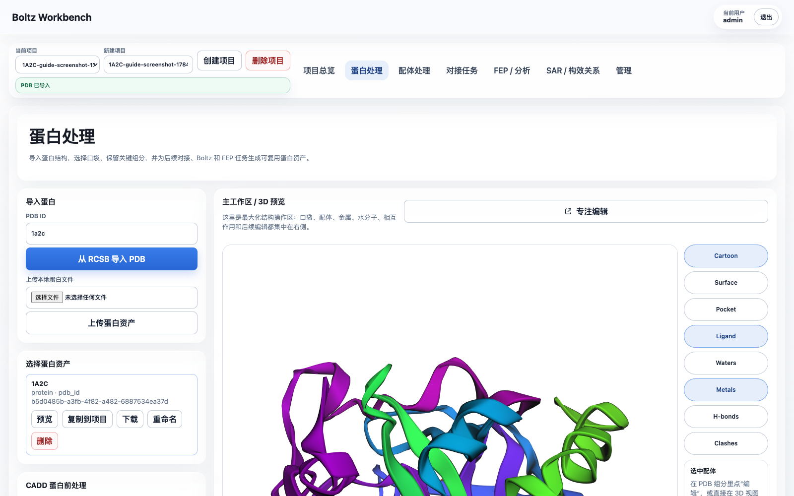
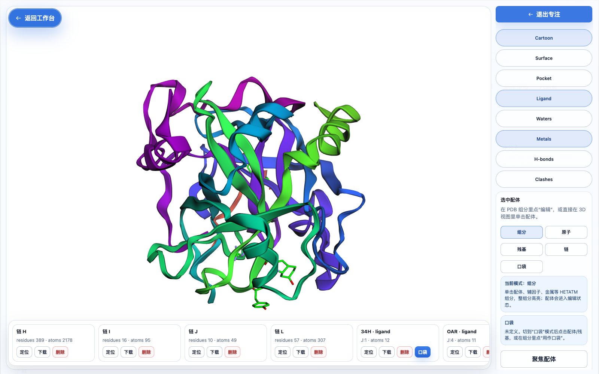
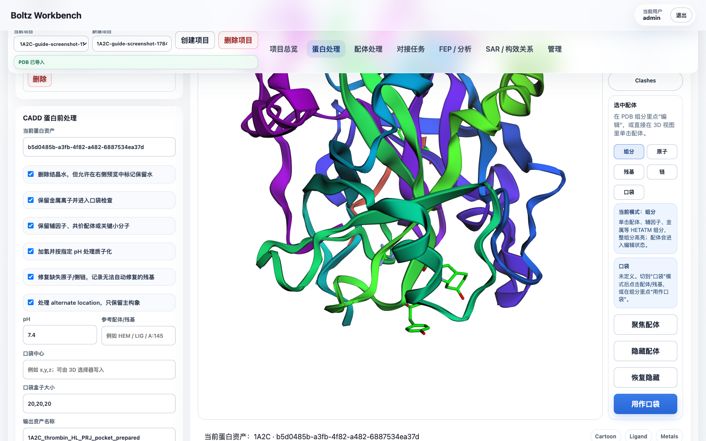
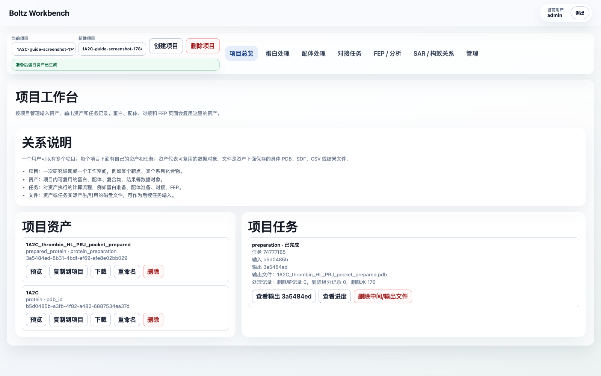

1A2C 蛋白准备网页端操作指南 / 1A2C Protein Preparation Web Guide
本文以 PDB 1A2C 为例，说明在 WA-DD 网页端如何选择参考配体、定义口袋、完成蛋白准备，并把准备后的文件作为后续对接任务输入。
This guide uses PDB 1A2C as an example. It explains how to choose the reference ligand, define a docking pocket, run protein preparation in WA-DD, and reuse the prepared receptor and pocket in downstream docking workflows.
English quick path
- Log in as
admin / admin123456. - Create a project such as
tutorial-1A2C-thrombin. - Open
Protein Preparation, import PDB ID1a2c, and preview the imported protein asset. - In the PDB component list, use
PRJ J:3as the pocket reference. It sits in the middle of the Aeruginosin 298-A inhibitor chain. - Set the pocket center to approximately
18.54, -14.79, 20.56and start with a20, 20, 20 Åbox. Increase to22, 22, 22 Åif you want to cover the full inhibitor chain more conservatively. - Keep thrombin chains
H/L; remove the original inhibitor chainJbefore preparing the receptor. Remove hirudin chainIif the task is ordinary small-molecule docking against thrombin. - Keep
NA H:626unless your downstream method requires all ions removed. Remove crystallographic waters by default. - Run protein preparation and use the generated
prepared_proteinasset plus thepocketasset in the docking page.
1. 这个结构该选哪个配体
1A2C 是凝血酶 thrombin 与抑制剂 Aeruginosin 298-A 的复合物。PDB 文件里这个抑制剂不是一个单独的三字母配体，而是链 J：
chain J: 34H J:1 + LEU J:2 + PRJ J:3 + OAR J:4
网页端的 PDB 组分列表会把其中的 HETATM 组分拆开显示：
| 组分 | 类型 | 是否建议用于对接口袋 |
|---|---|---|
34H J:1 |
Aeruginosin 片段 | 可辅助确认口袋边界 |
PRJ J:3 |
Aeruginosin 中部片段 | 推荐作为网页端口袋中心参考 |
OAR J:4 |
Aeruginosin 端部胍基片段 | 可辅助确认口袋边界 |
TYS I:363 |
Hirudin 链 I 的磺酸化酪氨酸 | 不建议作为小分子对接口袋 |
NA H:626 |
钠离子 | 保留，不作为小分子口袋中心 |
HOH/WAT |
结晶水 | 默认删除，除非需要保留关键水 |
推荐做法：
- 生物学上的参考配体：使用整条
chain J，即 Aeruginosin 298-A。 - 当前网页端“用作口袋”的单组分参考：选择
PRJ J:3。 - 口袋中心推荐起点：
18.54, -14.79, 20.56。 - 口袋 box 推荐起点：
20, 20, 20 Å。
原因：PRJ J:3 位于链 J 抑制剂的中部，用它作为中心并把 box 调到约 20 Å，可以覆盖 34H/LEU/PRJ/OAR 整条抑制剂所在结合区域。不要用 TYS I:363 定义小分子对接口袋；它属于 hirudin 片段，不是本例要替换或复现的小分子配体。
2. 网页端导入 1A2C
- 打开 WA-DD。
- 登录：
- 用户名：
admin - 密码：
admin123456 - 进入
项目总览。 - 新建一个项目，例如：
tutorial-1A2C-thrombin- 进入
蛋白处理页面。 - 在
从 RCSB 导入 PDB输入： 1a2c- 点击
从 RCSB 导入 PDB。 - 在左侧
选择蛋白资产里点击新导入的1A2C，再点预览。
导入前页面如下：

导入完成后，左侧会出现 1A2C 蛋白资产：

右侧 3D 工作区应显示蛋白结构，并能看到链、配体、水、金属等对象。

3. 选择参考配体并定义口袋
- 在
蛋白处理页面右侧点击专注编辑。 - 在专注编辑窗口右侧选择模式：
- 推荐先使用
组分模式。 - 在底部横向对象条里找到：
PRJ · ligand · J:3- 点击
PRJ J:3对象卡片，或在 3D 视图里点击对应配体片段。 - 点击
用作口袋。
专注编辑窗口中，底部横向对象条会列出蛋白链、配体、金属、水等 PDB 对象：

- 打开
Pocket显示开关，确认 3D 视图里出现蓝色口袋 box。 - 在右侧口袋参数中把 box 调整为：
SX = 20SY = 20SZ = 20- 如果需要更保守覆盖整条链 J，可用：
SX = 22SY = 22SZ = 22- 调整时观察蓝色 box 是否覆盖
34H/LEU/PRJ/OAR所在区域。 - 点击
创建口袋资产。
选择 PRJ J:3 后，用它作为口袋参考：

创建后，这个口袋资产会出现在项目资产里，并会自动填入后续对接任务的口袋输入。
4. 准备蛋白时该删什么、保留什么
本例推荐参数：
| 项目 | 建议 |
|---|---|
| 水分子 | 默认删除 |
金属离子 NA H:626 |
保留 |
| 辅因子/关键 HETATM | 保留，除非明确知道不需要 |
参考抑制剂链 J |
如果准备用对接重放配体，应从受体里删除 |
Hirudin 链 I |
视研究目的决定；如果只做 thrombin 小分子口袋，建议删除 |
Thrombin 链 H/L |
保留 |
推荐的受体准备策略：
- 保留 thrombin 的
H链和L链。 - 删除
J链，因为它是原始共晶抑制剂，不应留在待对接受体里。 - 如果目标是普通小分子对接，也删除
I链 hirudin 片段，避免它占据外位点并影响口袋环境判断。 - 保留
NA金属离子，除非后续方法明确要求去除所有离子。 - 删除水分子作为默认起点；若后续发现某些水参与关键作用，再单独保留关键水。
网页端操作：
- 在专注编辑窗口底部对象条找到
chain J。 - 点击
删除，把原始抑制剂链 J 加入删除列表。 - 如果本次任务只研究 thrombin 小分子口袋，也找到
chain I，点击删除。 - 退出专注编辑，回到
蛋白处理。 - 在
CADD 蛋白前处理区域确认： - 删除结构水：勾选。
- 保留金属离子：勾选。
- 保留辅因子、共价配体或关键小分子：按研究目的选择；本例如果已经删除链 J，可以保持勾选。
- pH：
7.4。 - 输出名称建议填写：
1A2C thrombin prepared for docking
准备参数确认页面：

5. 执行蛋白准备任务
- 在
当前蛋白资产确认选择的是原始1A2C资产。 - 确认口袋参数已经填入，box 为
20, 20, 20 Å或你手动调整后的值。 - 点击
准备蛋白。 - 到
项目总览或当前页面的任务列表查看任务。
任务应显示：
queuedrunningcompleted
完成后会生成一个新的 prepared_protein 资产。
任务完成后，可以在项目总览看到任务卡片和输出资产：

6. 查看、下载和复用输出
准备完成后：
- 在任务卡片里点击
查看输出。 - 在输出资产页面确认：
- 类型：
prepared_protein - 文件：准备后的
.pdb - 元数据：包含删除水、删除链、口袋参数和处理统计。
- 点击
下载可下载准备后的 PDB。 - 后续
对接任务页面里选择这个prepared_protein作为蛋白输入。 - 如果另一个项目也要使用它，点击资产卡片里的
复制到项目，输入目标项目 ID，并给复制后的资产重新命名。
7. 失败任务怎么处理
如果任务失败：
- 在任务卡片里点击
查看进度，先看错误信息。 - 如果任务已经生成了部分输出，点击
删除中间/输出文件。 - 修改参数后点击
继续/重跑。 - 重跑后会生成新的输出资产，原任务记录会保留，方便追踪。
8. 当前实现边界
当前网页端已经能完成可追踪的 PDB 文本级准备：
- 删除指定链。
- 删除指定 HETATM 组分。
- 删除水分子。
- 生成可下载、可复用、可复制到其他项目的
prepared_protein资产。 - 记录任务状态、进度事件、输出文件和清理统计。
当前还没有真正执行以下化学准备步骤：
- 加氢。
- pH 相关质子化。
- 缺失原子/缺失残基修复。
- alternate location 的构象选择。
这些步骤会记录在任务元数据的 unsupported_operations 里，后续需要接入 PDBFixer/OpenMM、PropKa/PDB2PQR、Reduce 或同类 worker 后再执行。